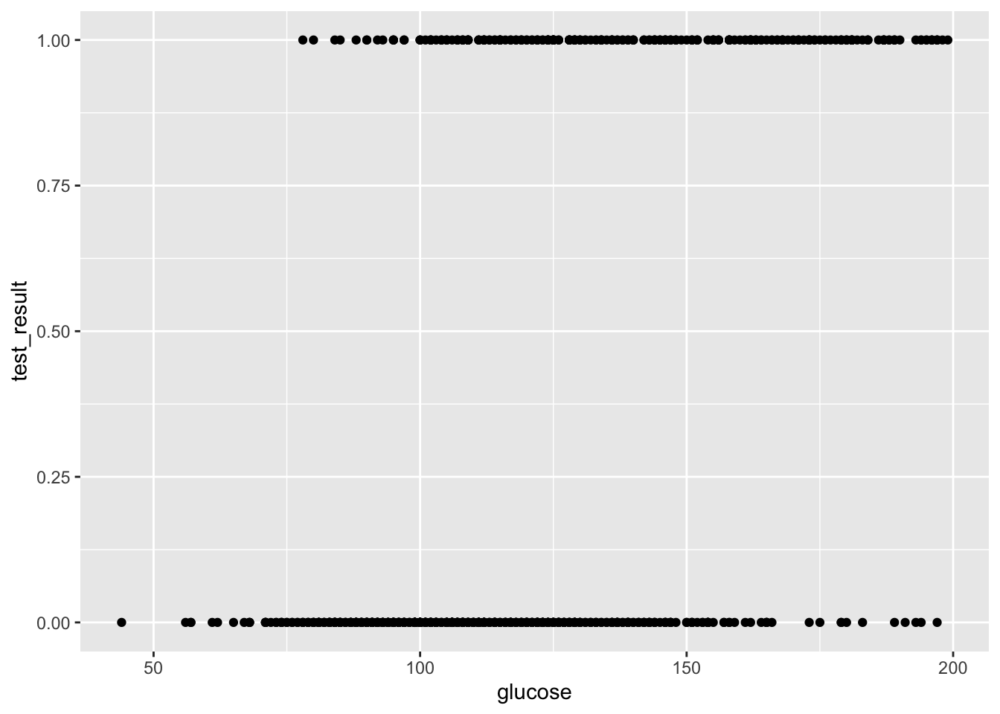
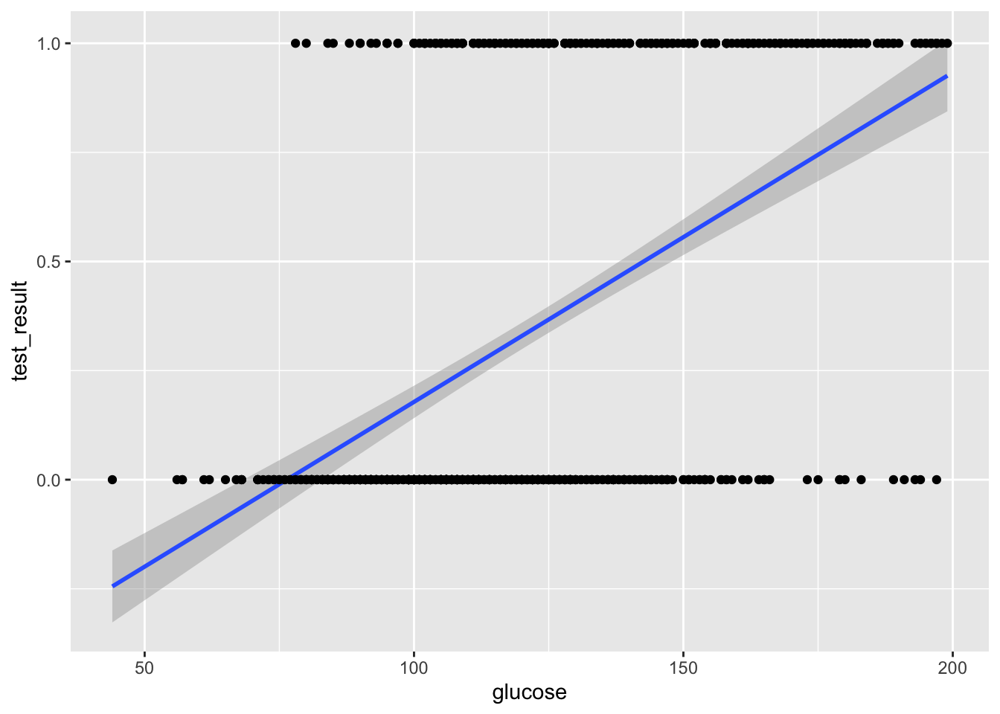
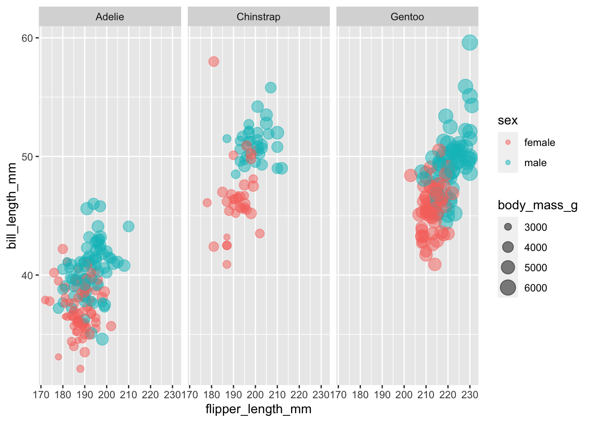
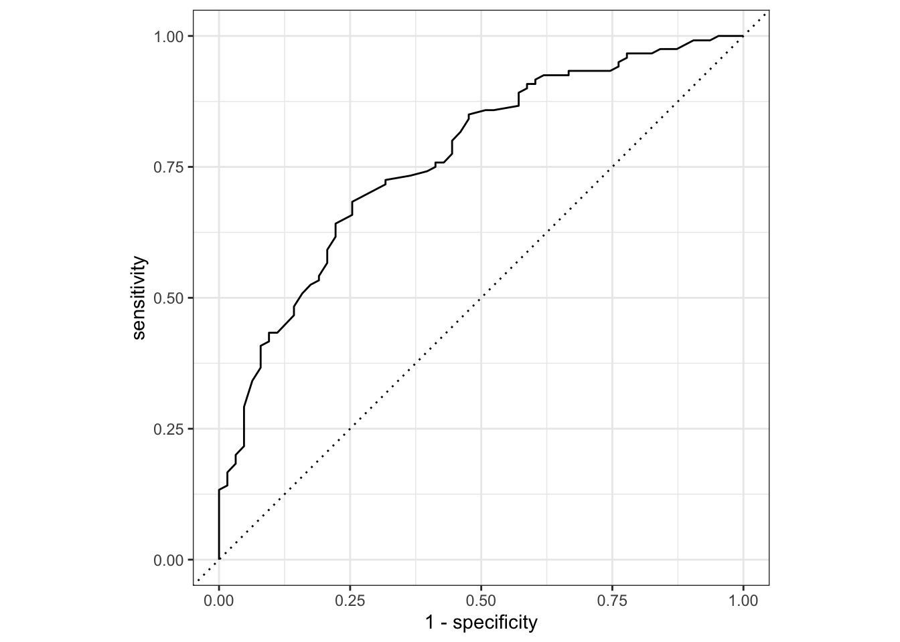
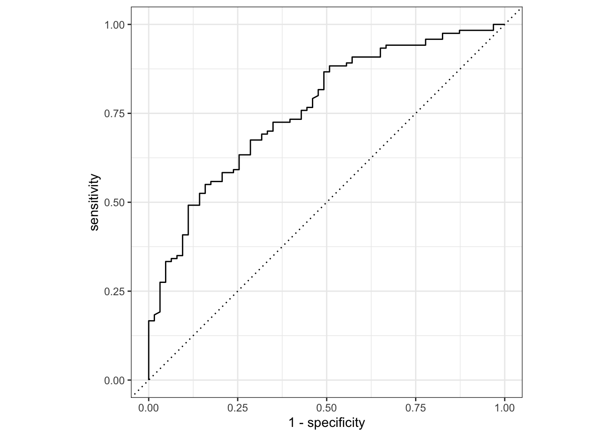

Binary response
- How do we analyse data with a binary outcome?
- Can we test if our model is any good?
- Be able to perform a logistic regression with a binary outcome
- Predict outcomes of new data, based on a defined model
- Evaluate model reliability by using training and test data sets
Libraries and functions
| Library | Description |
|---|---|
tidyverse |
A collection of R packages designed for data science |
tidymodels |
A collection of packages for modelling and machine learning using tidyverse principles |
Datasets
The example in this section uses the following data set:
data/diabetes.csv
This is a data set comprising 768 observations of three variables (one dependent and two predictor variables). This records the results of a diabetes test result as a binary variable (1 is a positive result, 0 is a negative result), along with the result of a glucose test and the diastolic blood pressure for each of 767 women. The variables are called test_result, glucose and diastolic.
Visualise the data
First we load the data, then we visualise it.
First, we load and inspect the data:
diabetes <- read_csv("data/diabetes.csv")Looking at the data, we can see that the test_result column contains zeros and ones. These are test result outcomes and not actually numeric representations.
This will cause problems later, so we need to tell R to see these values as factors. For good measure we’ll also improve the information in test_result by classifying it as ‘negative’ (0) or ‘positive’ (1).
diabetes <-
diabetes %>%
# replace 0 with 'negative' and 1 with 'positive'
mutate(test_result = case_when(test_result == 0 ~ "negative",
TRUE ~ "positive")) %>%
# convert character columns to factor
mutate_if(is.character, factor)We can plot the data:
diabetes %>%
ggplot(aes(x = test_result, y = glucose)) +
geom_boxplot()
It looks as though the patients with a positive diabetes test have slightly higher glucose levels than those with a negative diabetes test.
We can visualise that differently by plotting all the data points as a classic binary response plot:
diabetes %>%
ggplot(aes(x = glucose, y = test_result)) +
geom_point()
Model building
There are different ways to construct a logistic model.
In tidymodels we have access to a very useful package: parsnip, which provides a common syntax for a whole range of modelling libraries. This means that the syntax will stay the same as you do different kind of model comparisons. So, the learning curve might be a bit steeper to start with, but this will pay dividend in the long-term (just like when you started using R!).
First, we need to load tidymodels (install it first, if needed):
# install.packages("tidymodels")
library(tidymodels)The workflow in parsnip is a bit different to what we’re used to so far. Up until now, we’ve directly used the relevant model functions to analyse our data, for example using the lm() function to create linear models.
Using parsnip we approach things in a more systematic manner. At first this might seem unnecessarily verbose, but there are clear advantages to approaching your analysis in a systematic way. For example, it will be straightforward to implement other types of models using the same workflow, which you’ll definitely find useful when moving on to more difficult modelling tasks.
Using tidymodels we specify a model in three steps:
- Specify the type of model based on its mathematical structure (e.g., linear regression, random forest, K-nearest neighbors, etc).
- When required, declare the mode of the model. The mode reflects the type of prediction outcome. For numeric outcomes, the mode is regression; for qualitative outcomes, it is classification. If a model can only create one type of model, such as logistic regression, the mode is already set.
- Specify the engine for fitting the model. This usually is the software package or library that should be used.
So, we can create the model as follows:
dia_mod <- logistic_reg() %>%
set_mode("classification") %>%
set_engine("glm")Note that we are not actually specifying any of the variables just yet! All we’ve done is tell R what kind of model we’re planning to use. If we want to see how parsnip converts this code to the package syntax, we can check this with translate():
dia_mod %>% translate()Logistic Regression Model Specification (classification)
Computational engine: glm
Model fit template:
stats::glm(formula = missing_arg(), data = missing_arg(), weights = missing_arg(),
family = stats::binomial)This shows that we have a logistic regression model, where the outcome is going to be a classification (in our case, that’s a positive or negative test result). The model fit template tells us that we’ll be using the glm() function from the stats package, which can take a formula, data, weights and family argument. The family argument is already set to binomial.
Now we’ve specified what kind of model we’re planning to use, we can fit our data to it, using the fit() function:
dia_fit <- dia_mod %>%
fit(test_result ~ glucose,
data = diabetes)We can look at the output directly, but I prefer to tidy the data up using the tidy() function from broom package:
dia_fit %>% tidy()# A tibble: 2 × 5
term estimate std.error statistic p.value
<chr> <dbl> <dbl> <dbl> <dbl>
1 (Intercept) -5.61 0.442 -12.7 6.90e-37
2 glucose 0.0395 0.00340 11.6 2.96e-31The estimate column gives you the coefficients of the logistic model equation. We could use these to calculate the probability of having a positive diabetes test, for any given glucose level, using the following equation:
But of course we’re not going to do it that way. We’ll let R deal with that in the next section.
The std.error column gives you the error associated with the coefficients and the statistic column tells you the statistic value.
The values in p.value merely show whether that particular coefficient is significantly different from zero. This is similar to the p-values obtained in the summary output of a linear model, and as before, for continuous predictors these p-values can be used as a rough guide as to whether that predictor is important (so in this case glucose appears to be significant). However, these p-values aren’t great when we have multiple predictor variables, or when we have categorical predictors with multiple levels (since the output will give us a p-value for each level rather than for the predictor as a whole).
Model predictions
What if we got some new glucose level data and we wanted to predict if people might have diabetes or not?
We could use the existing model and feed it the some data:
# create a dummy data set using some hypothetical glucose measurements
diabetes_newdata <- tibble(glucose = c(188, 122, 83, 76, 144))
# predict if the patients have diabetes or not
augment(dia_fit,
new_data = diabetes_newdata)# A tibble: 5 × 4
glucose .pred_class .pred_negative .pred_positive
<dbl> <fct> <dbl> <dbl>
1 188 positive 0.140 0.860
2 122 negative 0.688 0.312
3 83 negative 0.912 0.0885
4 76 negative 0.931 0.0686
5 144 positive 0.481 0.519 Although you are able to get the predicted outcomes (in .pred_class), I would like to stress that this is not the point of running the model. It is important to realise that the model (as with all statistical models) creates a predicted outcome based on certain probabilities. It is therefore much more informative to look at how probable these predicted outcomes are. They are encoded in .pred_negative and .pred_positive.
For the first value this means that there is a 14% chance that the diabetes test will return a negative result and around 86% chance that it will return a positive result.
Exercise: Penguins
To practice this a bit more, we’ll be using a data set about penguins. The data are from the palmerpenguins package, which is included with tidymodels. The data set contains information on penguins at the Palmer Station on Antarctica. Chilly.
Have a look at the plot below, where we are comparing the bill length (bill_length_mm) of three species of penguins (species) against flipper length (flipper_length_mm).
We are also colouring the data based on sex (sex) and for good measure we’re also including information on the body size (body_mass_g).

It looks like female penguins are smaller with different sized bills and it would be interesting (yes, it would!) to investigate this further.
I would like you to do the following:
- load the data into an object called
penguinsusingdata("penguins") - create a logistic model and fit the data to it, using
sexas a classifier - is bill length an important indicator of sex?
First, we load the data:
data("penguins")We already have a reasonably good idea of what we’re looking at, but it can never hurt to understand your data better, so:
head(penguins)# A tibble: 6 × 8
species island bill_length_mm bill_depth_mm flipper_length_… body_mass_g sex
<fct> <fct> <dbl> <dbl> <int> <int> <fct>
1 Adelie Torge… 39.1 18.7 181 3750 male
2 Adelie Torge… 39.5 17.4 186 3800 fema…
3 Adelie Torge… 40.3 18 195 3250 fema…
4 Adelie Torge… NA NA NA NA <NA>
5 Adelie Torge… 36.7 19.3 193 3450 fema…
6 Adelie Torge… 39.3 20.6 190 3650 male
# … with 1 more variable: year <int>This shows that there are a few other columns in our data set, namely island, indicating the island where the penguins are residing and bill_depth_mm which records the bill depth.
We also notice that there are some missing values. It would be good to get rid of these, at least for the rows where there sex isn’t scored:
penguins <- penguins %>%
filter(!is.na(sex))Next, we specify the type of model. Notice that it can be useful to use a prefix in the naming of these objects to indicate which data set your model belongs to. Here we’re using pgn to denote penguins.
pgn_mod <- logistic_reg() %>%
set_mode("classification") %>%
set_engine("glm")Remember, that setting the model specification does not yet define the model itself. We do that as follows:
pgn_fit <- pgn_mod %>%
fit(sex ~ bill_length_mm,
data = penguins)Once we’ve fitted the data to the model, we can have a look at the model parameters:
pgn_fit %>% tidy()# A tibble: 2 × 5
term estimate std.error statistic p.value
<chr> <dbl> <dbl> <dbl> <dbl>
1 (Intercept) -6.04 1.01 -5.96 0.00000000247
2 bill_length_mm 0.138 0.0229 6.02 0.00000000176The model parameters tell us that both the intercept and the coefficient for bill_length_mm are significantly different from zero. So it seems that bill length is an important predictor of the sex of these penguins. Who knew?!
Model evaluation
So far we’ve constructed the logistic model and fed it some new data to make predictions to the possible outcome of a diabetes test, depending on the glucose level of a given patient. This gave us some diabetes test predictions and, importantly, the probabilities of whether the test could come back negative or positive.
The question we’d like to ask ourselves at this point: how reliable is the model?
To explore this, we need to take a step back.
Split the data
When we created the model, we used all of the data. However, a good way of assessing a model fit is to actually split the data into two:
- a training data set that you use to fit your model
- a test data set to validate your model and measure model performance
Before we split the data, let’s have a closer look at the data set. If we count how many diabetes test results are negative and positive, we see that these counts are not evenly split.
diabetes %>%
count(test_result) %>%
mutate(prop = n/sum(n))# A tibble: 2 × 3
test_result n prop
<fct> <int> <dbl>
1 negative 478 0.657
2 positive 250 0.343This can have some consequences if we start splitting our data into a training and test set. By splitting the data into two parts - where most of the data goes into your training set - you have data left afterwards that you can use to test how good the predictions of your model are. However, we need to make sure that the proportion of negative and positive diabetes test outcomes remains roughly the same.
The rsample package has a couple of useful functions that allow us to do just that and we can use the strata argument to keep these proportions more or less constant.
# ensures random data split is reproducible
set.seed(123)
# split the data, basing the proportions on the diabetes test results
data_split <- initial_split(diabetes, strata = test_result)
# create data frames for the two sets:
train_data <- training(data_split)
test_data <- testing(data_split)We can check what the initial_split() function has done:
# proportion of data allocated to the training set
nrow(train_data) / nrow(diabetes)[1] 0.7486264# proportion of diabetes test results for the training data set
train_data %>%
count(test_result) %>%
mutate(prop = n/sum(n))# A tibble: 2 × 3
test_result n prop
<fct> <int> <dbl>
1 negative 358 0.657
2 positive 187 0.343# proportion of diabetes test results for the test data set
test_data %>%
count(test_result) %>%
mutate(prop = n/sum(n))# A tibble: 2 × 3
test_result n prop
<fct> <int> <dbl>
1 negative 120 0.656
2 positive 63 0.344From the output we can see that around 75% of the data set has been used to create a training data set, with the remaining 25% kept as a test set.
Furthermore, the proportions of negative:positive are kept more or less constant.
Create a recipe
# Create a recipe
dia_rec <-
recipe(test_result ~ glucose, data = train_data)
# Look at the recipe summary
summary(dia_rec)# A tibble: 2 × 4
variable type role source
<chr> <chr> <chr> <chr>
1 glucose numeric predictor original
2 test_result nominal outcome originalBuild a model specification
dia_mod <-
logistic_reg() %>%
set_engine("glm")Use recipe as we train and test our model
dia_wflow <-
workflow() %>%
add_model(dia_mod) %>%
add_recipe(dia_rec)
dia_wflow══ Workflow ════════════════════════════════════════════════════════════════════
Preprocessor: Recipe
Model: logistic_reg()
── Preprocessor ────────────────────────────────────────────────────────────────
0 Recipe Steps
── Model ───────────────────────────────────────────────────────────────────────
Logistic Regression Model Specification (classification)
Computational engine: glm Although it seems a bit of overkill, we now have a single function that can we can use to prepare the recipe and train the model from the resulting predictors:
dia_fit <-
dia_wflow %>%
fit(data = train_data)This creates an object called dia_fit, which contains the final recipe and fitted model objects. We can extract the model and recipe objects with several helper functions:
dia_fit %>%
extract_fit_parsnip() %>%
tidy()# A tibble: 2 × 5
term estimate std.error statistic p.value
<chr> <dbl> <dbl> <dbl> <dbl>
1 (Intercept) -5.72 0.513 -11.2 6.84e-29
2 glucose 0.0406 0.00397 10.2 1.46e-24Use trained workflow for predictions
So far, we have done the following:
- Built the model (
dia_mod), - Created a pre-processing recipe (
dia_rec), - Combined the model and recipe into a workflow (
dia_wflow) - Trained our workflow using the
fit()function (dia_fit)
The results we generated above do not differ much from the values we obtained with the entire data set. However, these are based on 3/4 of the data (our training data set). Because of this, we still have our test data set available to apply this workflow to data the model has not yet seen.
dia_aug <-
augment(dia_fit, test_data)
dia_aug# A tibble: 183 × 6
glucose diastolic test_result .pred_class .pred_negative .pred_positive
<dbl> <dbl> <fct> <fct> <dbl> <dbl>
1 85 66 negative negative 0.906 0.0938
2 183 64 positive positive 0.152 0.848
3 168 74 positive positive 0.249 0.751
4 166 72 positive positive 0.264 0.736
5 115 70 positive negative 0.740 0.260
6 99 84 negative negative 0.845 0.155
7 196 90 positive positive 0.0959 0.904
8 119 80 positive negative 0.708 0.292
9 143 94 positive positive 0.478 0.522
10 97 66 negative negative 0.856 0.144
# … with 173 more rowsEvaluate the model
We can now evaluate the model. One way of doing this is by using the area under the ROC curve as a metric.
An ROC curve (receiver operating characteristic curve - the name being a strange relic of WWII where developed for operators of military radar receivers) plots the true-positive rate (TPR) against the false-positive rate (FPR) at varying thresholds.
The true-positive rate is also known as sensitivity, whereas the false-positive rate is 1 - sensitivity (which, if you recall from the session of Power Analysis is also known as the power.)
dia_aug %>%
roc_curve(truth = test_result, .pred_negative) %>%
autoplot()
The area under the ROC curve, which is known as the AUC provides an aggregate measure of performance across all possible classification thresholds.
It ranges in value from 0 to 1. A model whose predictions are 100% wrong has an AUC of 0. A model whose predictions are 100% correct has an AUC of 1.0.
dia_aug %>%
roc_auc(truth = test_result, .pred_negative)# A tibble: 1 × 3
.metric .estimator .estimate
<chr> <chr> <dbl>
1 roc_auc binary 0.766In addition to the ROC curve and AUC we also have a whole range of model parameters associated with the fitted model. We’re not going through all of them at this point, but one in particular should be familiar.
We extract these parameters as follows:
dia_fit %>% glance()# A tibble: 1 × 8
null.deviance df.null logLik AIC BIC deviance df.residual nobs
<dbl> <int> <dbl> <dbl> <dbl> <dbl> <int> <int>
1 701. 544 -277. 558. 567. 554. 543 545Here we see the Akaike Information Criterion (AIC) as an output. Remember, the value of the AIC in itself is meaningless, but it’s useful to compare relative to AICs of other models. We covered how to do this in the Power analysis session of the Core statistics course.
Here we see that the AIC for this model that uses the glucose level as a single predictor for the diabetes test result is 558.
Exercise - Diabetes predictors
Using the training and test diabetes data sets, investigate the relationship between test_result and both glucose and diastolic. Try to answer the following:
- does adding
diastolicto the model markedly improve the reliability of the predictions? - what do the AICs for the two models tell you?
# Update the recipe
dia_rec <-
recipe(test_result ~ glucose + diastolic,
data = train_data)
# Look at the recipe summary
summary(dia_rec)# A tibble: 3 × 4
variable type role source
<chr> <chr> <chr> <chr>
1 glucose numeric predictor original
2 diastolic numeric predictor original
3 test_result nominal outcome originalBuild the model, if needed (we have done this already and it stays the same):
dia_mod <-
logistic_reg() %>%
set_engine("glm")Create a workflow…
dia_wflow <-
workflow() %>%
add_model(dia_mod) %>%
add_recipe(dia_rec)… and fit the data:
dia_fit <-
dia_wflow %>%
fit(data = train_data)Extract the model parameters to have a look:
dia_fit %>%
extract_fit_parsnip() %>%
tidy()# A tibble: 3 × 5
term estimate std.error statistic p.value
<chr> <dbl> <dbl> <dbl> <dbl>
1 (Intercept) -6.99 0.790 -8.85 8.60e-19
2 glucose 0.0394 0.00398 9.88 5.19e-23
3 diastolic 0.0195 0.00877 2.22 2.61e- 2Apply the fitted model to the test data set:
dia_aug <-
augment(dia_fit, test_data)
dia_aug# A tibble: 183 × 6
glucose diastolic test_result .pred_class .pred_negative .pred_positive
<dbl> <dbl> <fct> <fct> <dbl> <dbl>
1 85 66 negative negative 0.914 0.0862
2 183 64 positive positive 0.189 0.811
3 168 74 positive positive 0.257 0.743
4 166 72 positive positive 0.280 0.720
5 115 70 positive negative 0.751 0.249
6 99 84 negative negative 0.811 0.189
7 196 90 positive positive 0.0776 0.922
8 119 80 positive negative 0.679 0.321
9 143 94 positive positive 0.385 0.615
10 97 66 negative negative 0.869 0.131
# … with 173 more rowsPlot the ROC curve:
dia_aug %>%
roc_curve(truth = test_result, .pred_negative) %>%
autoplot()
And get the area under the ROC curve:
dia_aug %>%
roc_auc(truth = test_result, .pred_negative)# A tibble: 1 × 3
.metric .estimator .estimate
<chr> <chr> <dbl>
1 roc_auc binary 0.761Another way to assess the model fit is to look at the Akaike Information Criterion (AIC).
dia_fit %>% glance()# A tibble: 1 × 8
null.deviance df.null logLik AIC BIC deviance df.residual nobs
<dbl> <int> <dbl> <dbl> <dbl> <dbl> <int> <int>
1 701. 544 -275. 555. 568. 549. 542 545We get an AIC of 555, which is lower than the AIC of 558 that we got with just glucose as a predictor variable.
Conclusions
Adding the diastolic variable as a predictor to the model does not seem to have much of an effect on the model reliability, since the AUC is 0.761 with the extra parameter, versus 0.766 without.
The AIC on the other hand suggests that the additive model we’ve analysed here has a better fit than the original model (AIC of 555 vs 558).
Food for thought
Perhaps there is an interaction between glucose and diastolic, which would be interesting to investigate.
Key points
- We use a logistic regression to model a binary response
- Model suitability can be checked by splitting the data into a training and test data set. The logistic model is then created based on the training data, and the reliability can be checked against the (known) values in the test data set
- The ROC curve shows the performance of a classification model at all thresholds, whereas the area under the ROC curve provides an aggregate measure of performance of all possible classifications thresholds